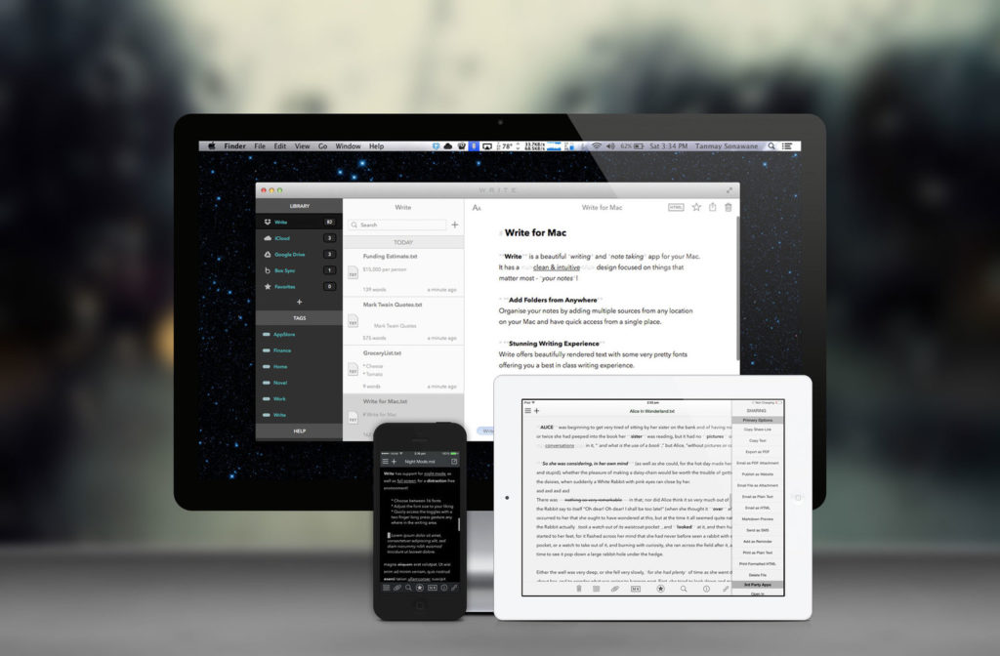

Write, a cross-platform Markdown writing app
Overview
At its most basic, Write is a cross-platform Markdown-speaking text editor. Whether on the Mac, iPad, or iPhone, editing text is a consistent, straightforward experience. Each platform offers the same options for dark or light mode and writing in "rich Markdown", hybrid mode, or plain text. Plain text is what it sounds like. There's no formatting or styling of the text whatsoever. The rich Markdown mode works much like any other word processor where the text displays just as it would print. Under the covers, the content is still Markdown, but it displays in rich text (headers, bold, italic, etc.) and responds to the usual rich text shortcuts like⌘I for italics and ⌘B for bold on both Mac and iPad. (The iPhone app does not currently support keyboard shortcuts and is generally a bit buggy with a Bluetooth keyboard. The developer says he plans to address this in future development.)
The hybrid mode is what users of other apps like Byword will be most familiar with. It's a formatted Markdown. The text displays with its formatting, but the formatting characters themselves are dimmed out. So, for bold text, **some text** displays "some text" in bold and the bolding asterisks in a subdued gray. On any platform, Write easily toggles between Markdown preview and editing with a tap or click.
Where most apps limit you to syncing to a single Dropbox or iCloud location, Write can sync multiple folders of documents and allows easy file navigation. Some users seem content to have all their files in one folder and then search for the relevant one, but for me, being able to keep my business text files in a separate Dropbox folder from my personal text files for ease of sharing and collaboration and general anal retentive organizational purposes. Write also supports iCloud syncing.
Another place that Write excels is in sharing and publishing capabilities. Write supports Tumblr, WordPress and FTP upload publishing. On iOS, Write also supports sharing to third-party apps and services like Facebook, CloudApp, Evernote, and Google Drive. If that's not enough, it's also possible to create your own sharing actions. The syntax for this is similar to creating custom actions in Drafts. If you're familiar with Drafts, you'll feel right at home here.
The last thing that all the Write apps support is tags. On iPad, iPhone, and Mac, Write can read and write tags that can be used in the other Write apps but also make their round trip to OS X's native tags so that Spotlight search for regular OS X tags will also find your Write documents. If you're a tagger, this is giant.
Write for iOS
On iOS, the editing mode includes a helpful accessory view as well. In addition to formatting functions like bold, italic, underline, headings, lists, links, etc. there is a button for toggling Markdown preview, and utility buttons for undo/redo. The accessory button that I find most useful is the cursor positioning button. Tap on this button and keep your finger pressed to the screen and you can drag the cursor around the text view. The drag does not need to remain within the bounds of the button, and once you lift your finger from the screen, the cursor position is finalized. After just a few times using this feature, I found myself missing it in other iOS writing apps including Mail and Messages. My first laptop had a mouse pointer button in the middle of the home row rather than a trackpad, and this works similarly but at the same time much more responsively. On the iPad, there is a familiar master-detail UI with a master view that collapses out of the way after selecting a file to view or edit. On the iPhone, the list of files is tucked away in a basement menu view that's available with a tap. The key to Write's iOS experience is that when you're actually ready to write, the UI has already made itself scarce.Write for Mac
Write for Mac is customizable to create any stylesheet you want beyond the included light and dark themes. Personally, I prefer my writing environment to be consistent on every screen, so I haven't embraced any custom theming. Write is similar to other Markdown apps. In my usage, it compares closest to Byword. Whereas Byword dims the text color of anything that is not your words, Write uses color for things like links in the body. These links are actually clickable, though, so it's reasonable that they're not dimmed. Write for Mac uses the iPad version's master-detail layout but makes good use of the extra space available on the Mac. The Mac version also allows for opening a document in a separate window, full screen mode, and other distraction-free writing hallmarks.Conclusion
Write is a useful, consistent suite of apps that allows me to write any time the words decide to start flowing. With its plethora of output channels, including publishing to WordPress and Tumblr, Write can power any writing need. Write is available for iPhone, iPad, and Mac.